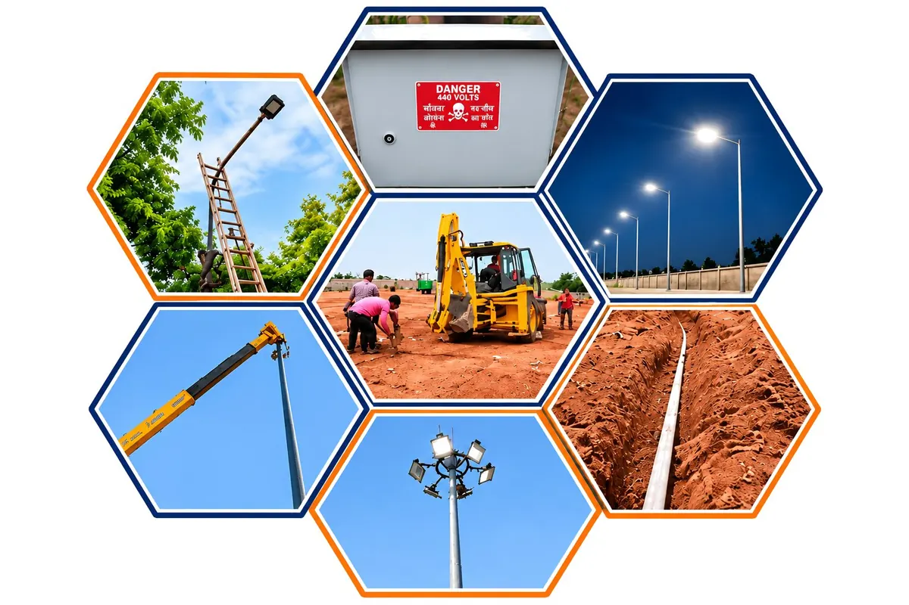
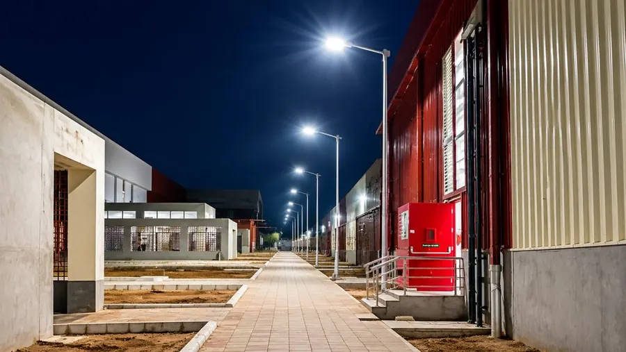
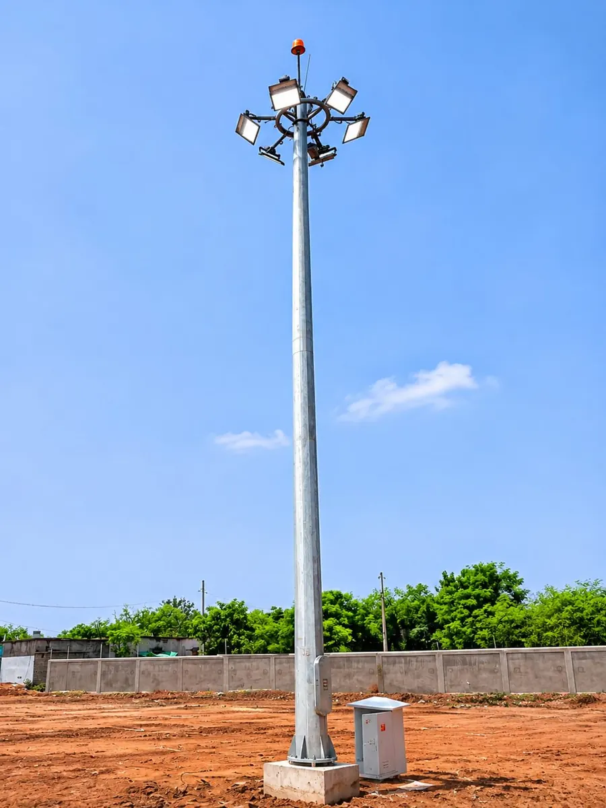
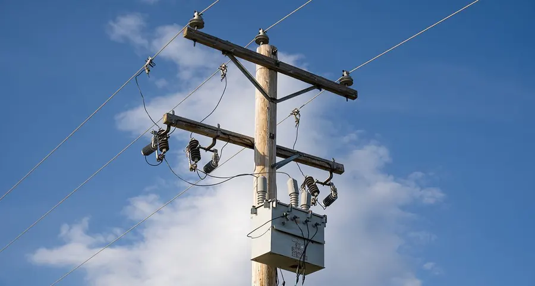
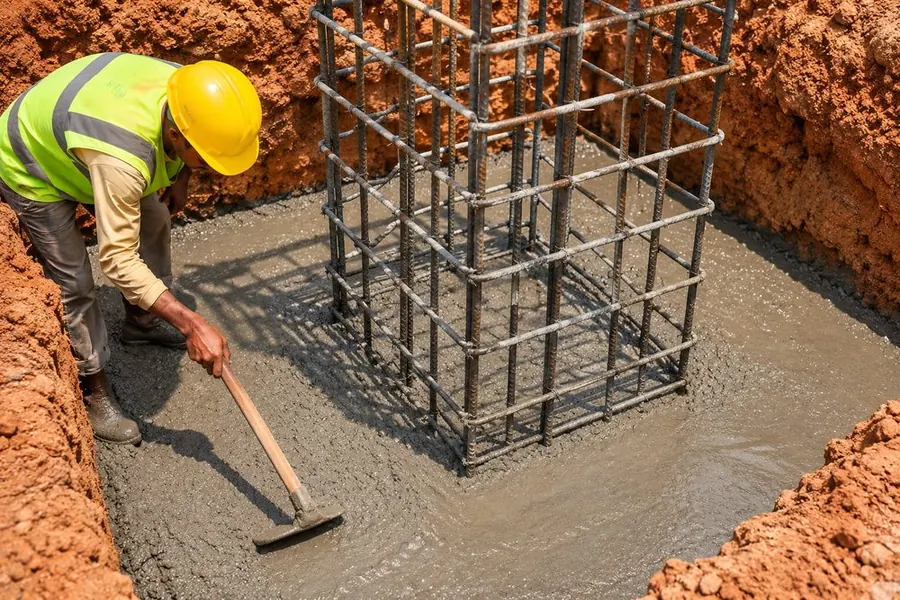
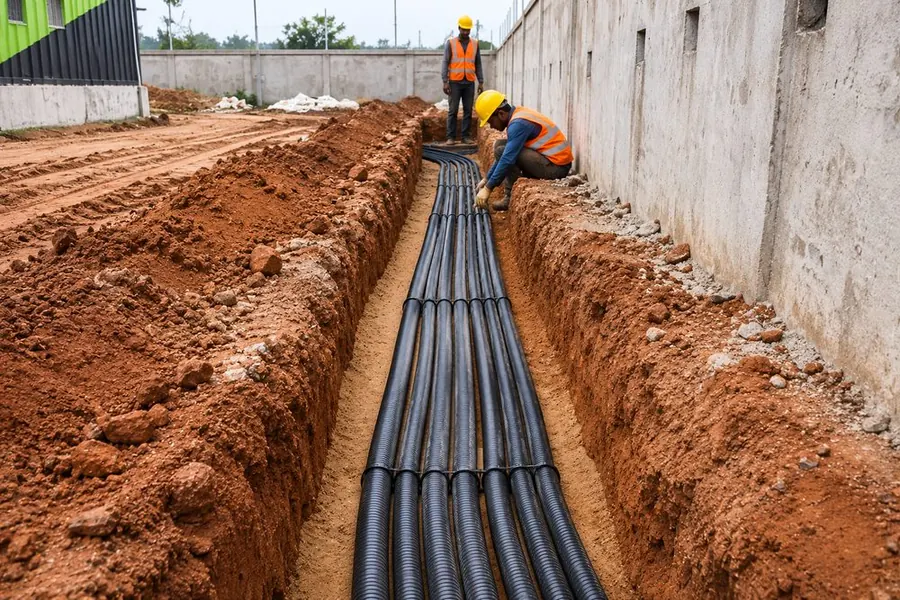
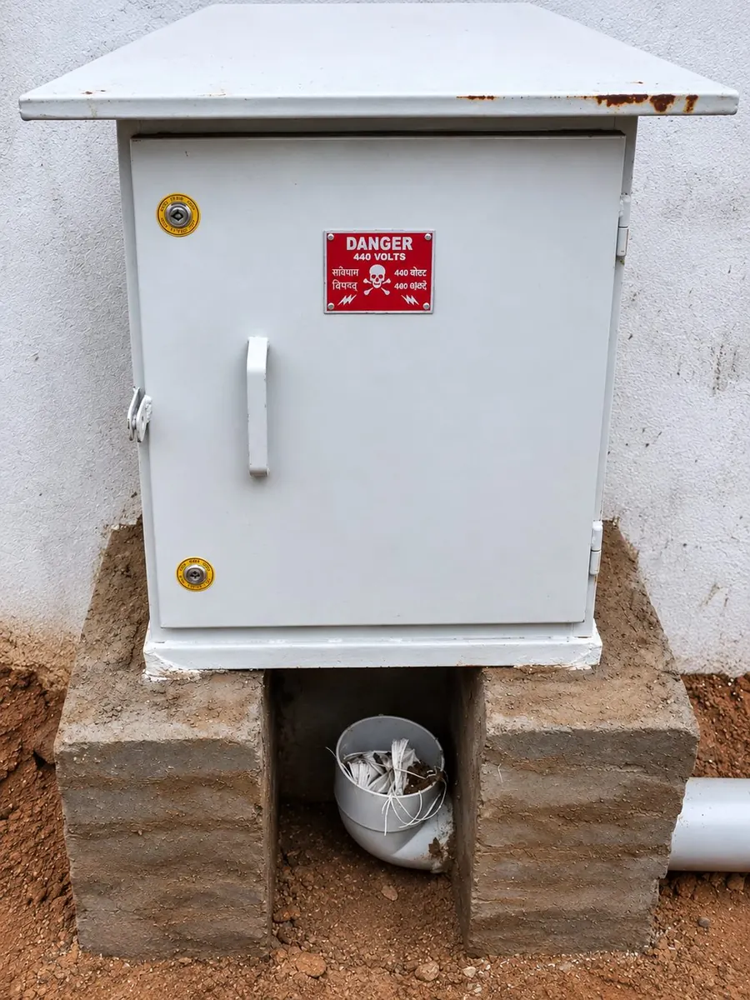
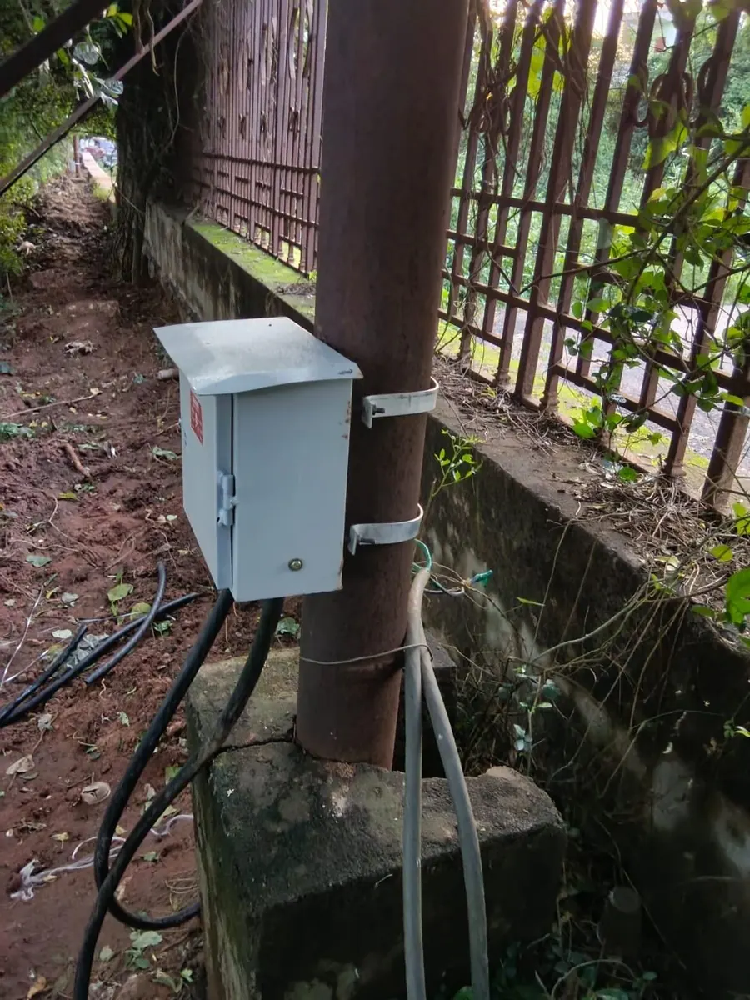

Foundations, pole and mast erection, cabling, wiring and commissioning by our own crew, so the civil and electrical work fit together and one team answers for the job.
Lamp-head repair at height, fault finding, cable replacement and junction box changeover to keep street lighting and high mast networks working.
From site survey and setting out to testing and handover, our engineers plan the work, coordinate shutdowns and keep the client informed at every stage.


We take street lighting jobs from survey to switch-on: setting out the pole positions, casting the foundations, erecting octagonal or tubular poles, fitting brackets and LED luminaires, laying the cable and commissioning every light.
Our crew handles municipal roads, campuses, parks, industrial estates and railway premises, and we test each circuit at night before handover.

High masts for junctions, yards, railway stations, parks and plant areas. We cast the foundation with its anchor bolt cage, erect the mast sections by crane and fit the lantern carriage, floodlights and winch.
Every mast is earthed, fitted with an aviation lamp and lightning finial where needed, and commissioned with all floodlights tested.

We build medium-voltage and LT overhead distribution lines to DISCOM norms: pole erection, cross-arms and insulators, conductor stringing, AB cabling and stay sets.
Shutdown permits and line clearance are coordinated with the utility so the work is completed safely and on schedule.

The civil side of every electrical job is done by our own crew: excavation, rebar mats and cages, anchor bolt templates, shuttering and concreting for masts, poles, feeder pillars and plinths.
Because the same team does the electrical work, foundations are set out correctly for the equipment that goes on them.

We lay underground cable for lighting and distribution circuits: trenching, sand bedding, HDPE ducting at road crossings, XLPE armoured cable laying, glanding and core termination.
Routes are marked before digging and backfilled and restored after laying.

Outdoor feeder pillars and pole-mounted junction and control boxes, installed on their plinths, wired with cut-outs, MCBs and timers, earthed and tested.
We also replace old or damaged boxes on existing lighting networks.

Maintenance for existing street lighting and high mast networks: lamp-head repair and replacement at height, fault finding, faulty cable replacement and junction box changeover.
We keep the network working with minimum disruption to traffic and the public.
Supply of galvanised octagonal and decorative poles, flag masts with winch, brackets, luminaires and fittings, either with installation or as material supply.
We arrange delivery to site and can erect the material with our own crew.